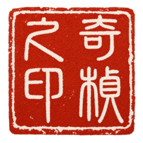

花开花落 云卷云舒

重構程序員
墨卷
寫給 AI 時代的自己 · 浪潮之下，一個程序員的困思與頓悟
LabVIEW 編程
墨卷
探索數據流的藝術 · 從零開始的圖形化編程之道
Python 教程
墨卷
賽博修仙指南 · 以代碼為劍，以邏輯為道
回音堂
雅集
跨越時空的對話 · 以問答重現被歲月湮沒的往事
塵世微光
拾遺
打撈時間的碎片 · 為上世紀的平凡人生留下註腳
懷舊遊戲
閑趣
舊夢重溫 · 編程途中，信手拾回的少年歡愉
個人博客
隨筆
浮生雜記 · 關於技術、閱讀與日常的零墨碎痕
◁
滑動瀏覽